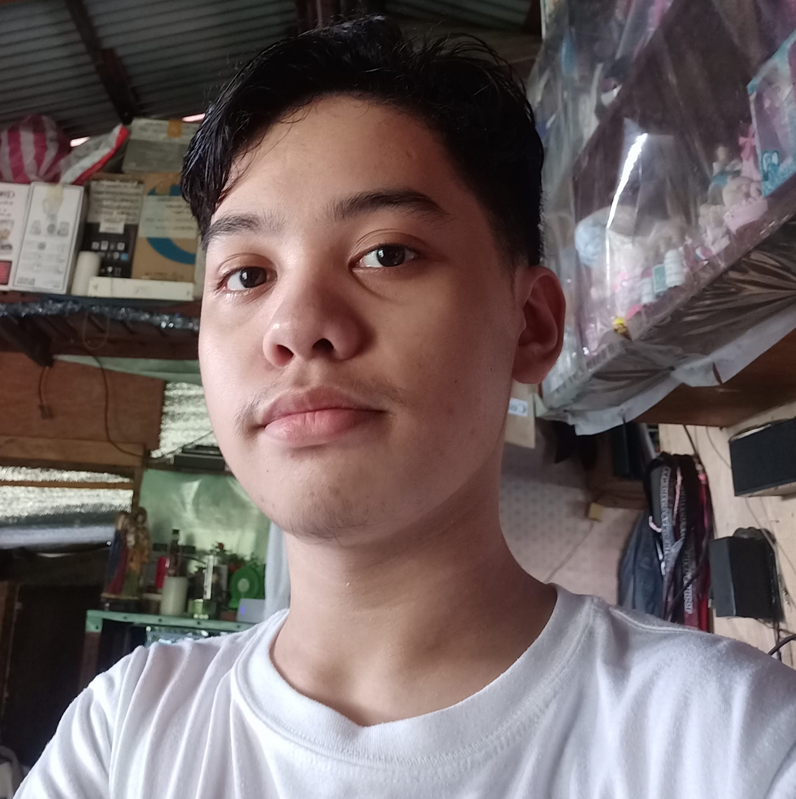

About Me
My name is John Patrick P. Ochoa
and I am a second-year college student at Pamantasan ng Lungsod ng Valenzuela, pursuing a degree in Information Technology with a focus on Game Development.
My passion for gaming and technology has driven me to explore various programming languages and game development tools. I have some Familiarities in languages such as Java and C#.
Outside of my studies and coding projects, I enjoy playing video games, watching esports tournaments, and attending gaming conventions to stay updated on the latest industry trends.